Developing the First Example Program Running on Hi3861¶
This example shows how to use attention (AT) commands to complete WLAN module networking.
Acquiring Source Code¶
You need to acquire Hi3861 source code and download it on a Linux server. For more methods, see Source Code Acquisition.
Compiling Source Code¶
This section describes how to compile the WLAN module on a Linux server.
Use the OpenHarmony IDE DevEco to connect to a Linux server. (The IDE DevEco integrates the capabilities of terminal tools. For details about how to use the tool, see User Guide.)
Click View and then Terminal to start the IDE terminal tool.
Figure 1 Starting the IDE terminal tool
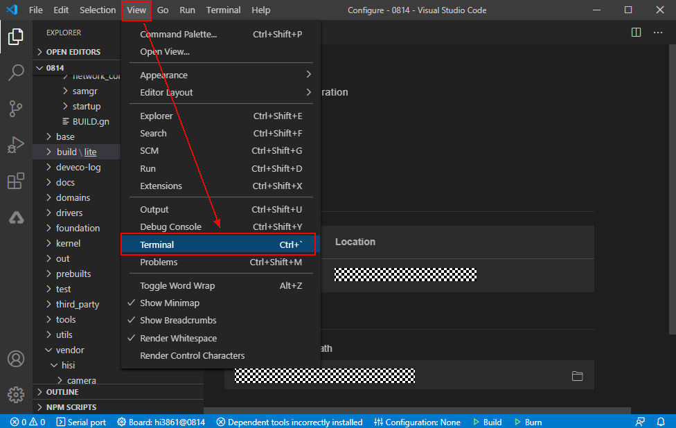
On the TERMINAL page, run the ssh command, for example, **ssh user@_ipaddr_**, to connect to the Linux server.
Figure 2 TERMINAL page
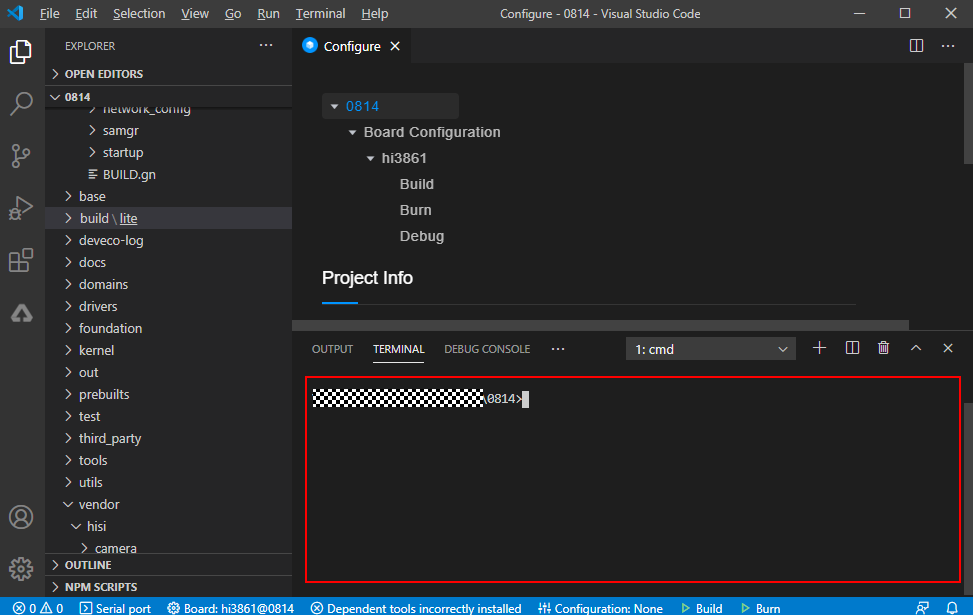
Go to the root directory of the code and run the python build.py wifiiot command in the TERMINAL page to start compilation.
Figure 3 Running the compilation command on TERMINAL page
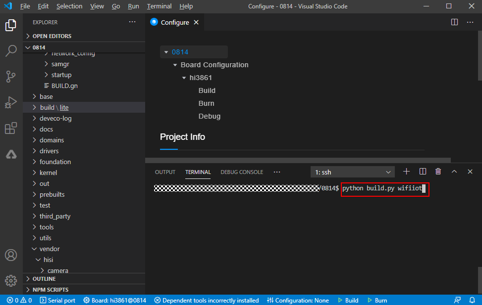
Check whether the building is successful. If yes, BUILD SUCCESS will be displayed, as shown in the following figure.
Figure 4 Successful building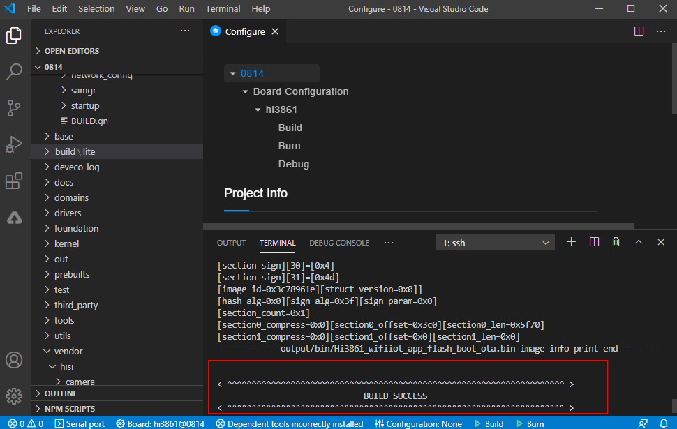Check whether the following files are generated in the out/wifiiot directory.
Figure 5 Directory for storing compilation files
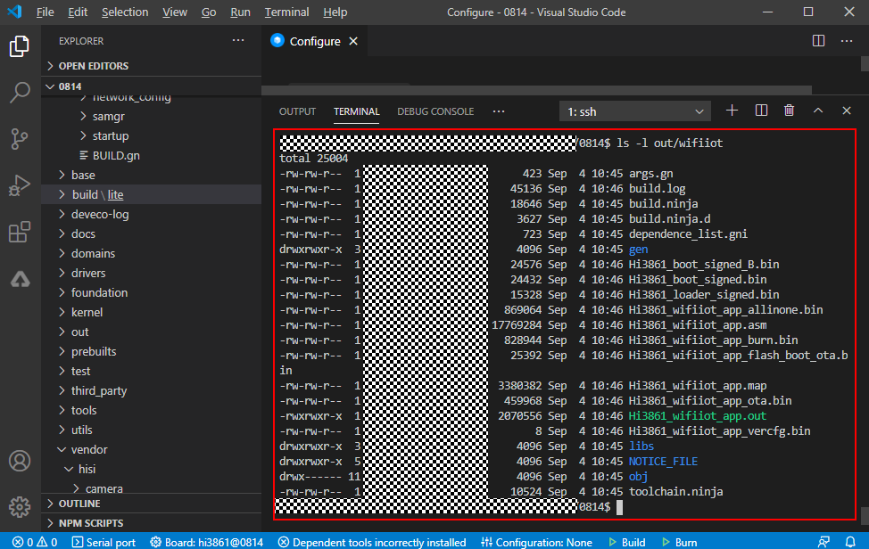
Burning Images¶
You can use the DevEco tool to perform the image burning of the Hi3861 WLAN module. For details about how to use the tool, see User Guide.
Use a USB cable to connect to the Windows workstation and WLAN module. (Before the connection to the WLAN module, download the USB-to-serial driver from http://www.wch.cn/search?q=ch340g&t=downloads and install it.) In addition, query the COM port on the device manager, for example, CH340 (COM11) which provides functions of code burning, log printing, and AT commands execution.
Figure 6 COM port of the device manager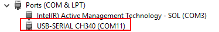Enter the burning configuration page.
Figure 7 Basic configurations for image burning
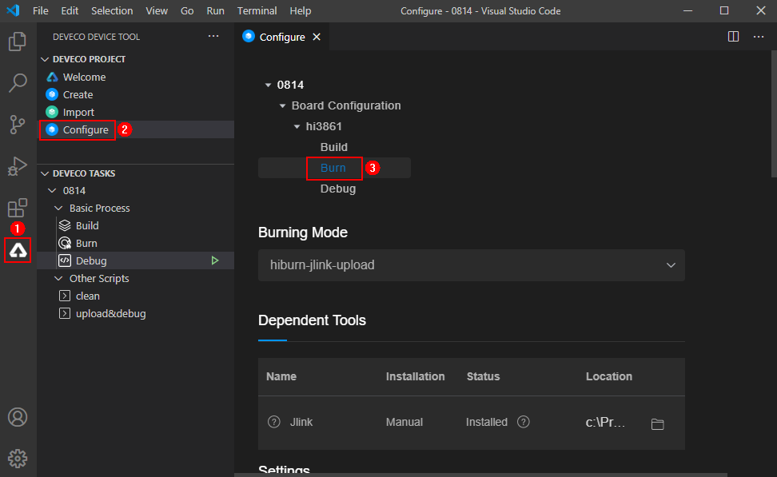
Configure basic parameters.
Set a proper baud rate. A higher baud rate indicates a faster burning speed. Here 921600 is recommended.
Select a data bit. The default value of Data bit for the WLAN module is 8.
Select the version package path ./out/wifiiot/Hi3861_wifiiot_app_allinone.bin and Hiburn mode.
Click Save to save configurations.
Figure 8 Baud rate and data bit configurations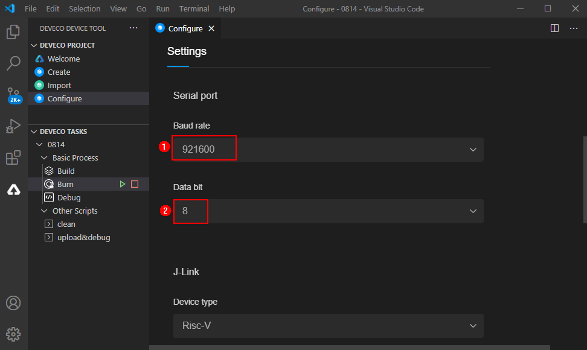Figure 9 Path of the burning package
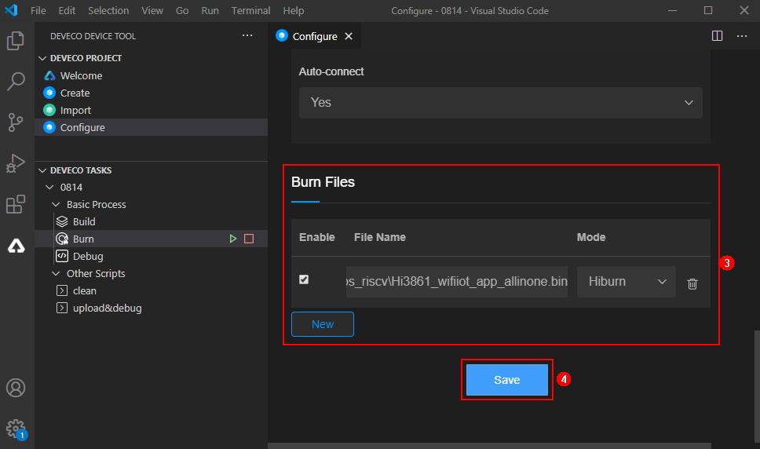
On the DevEco, click Burn and select the serial port COM11.
Figure 10 Starting a burning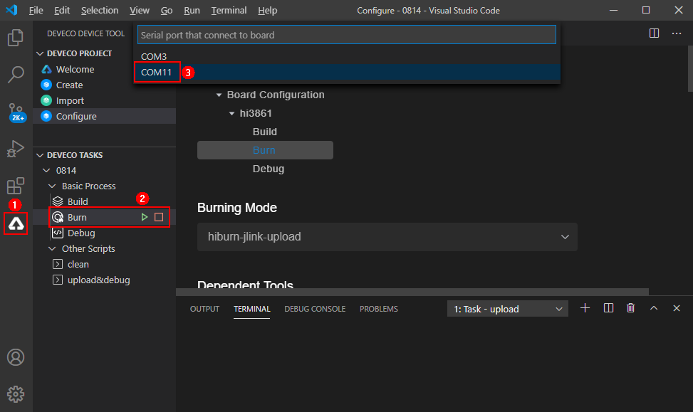After the serial port is selected, Connecting, please reset device… is shown below the TERMINAL tab, indicating that the module is in the to-be-burnt state.
Figure 11 Burning process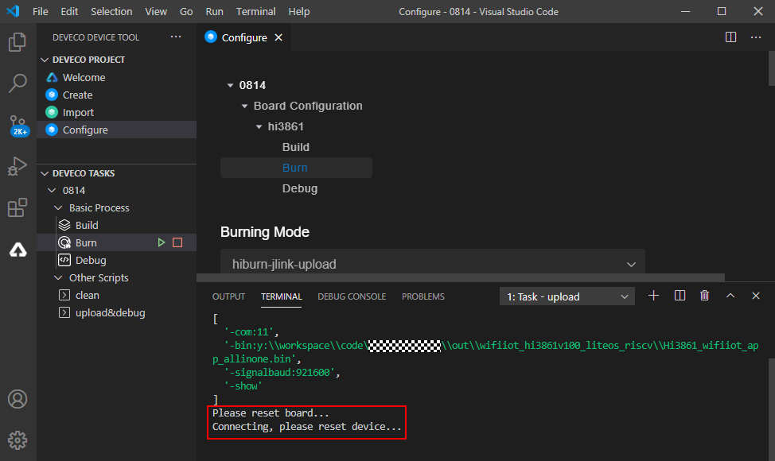Press the Reset key on the module to start burning. Execution Successful displayed below the TERMINAL tab indicates the burning is complete.
Figure 12 Burning completed
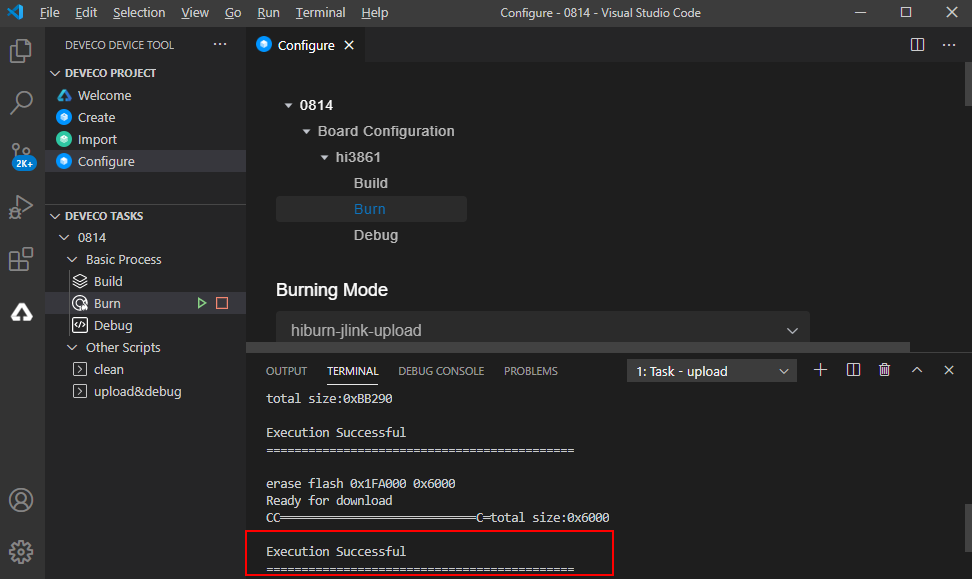
Connecting WLAN Module to the Internet¶
After completing version building and burning, do as follows to connect the WLAN module to the Internet using AT commands.
NOTE: - The DevEco serial port connection function is to be launched soon, so stay tuned. - In this example, the serial port tool IPOP is used for demonstration. You can obtain this tool from the Internet.
Use a USB cable to connect the Windows workstation to the Hi3861 development board. Ensure that the serial port to be connected is COM11, as shown in the following figure.
Figure 13 COM port of the device manager

On the Windows workstation, use IPOP to connect to the serial port (COM11) of the WLAN module, set the baud rate to 115200, select Newline, and ensure that the entered string ends with \rn to avoid AT command input failures.
Figure 14 IPOP connection configuration
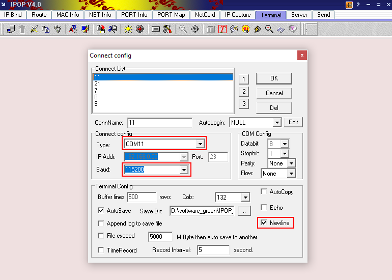
Reset the WLAN module. The message ready to OS start is displayed on the terminal page, indicating that the WLAN module is started successfully.
Figure 15 Successful resetting of the WLAN module
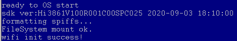
Run the following AT commands in sequence via the IPOP serial terminal to start the STA mode, connect to the specified AP, and enable Dynamic Host Configuration Protocol (DHCP).
AT+STARTSTA - Start the STA mode. AT+SCAN - Scan for available APs. AT+SCANRESULT - Display the scanning result. AT+CONN="SSID",,2,"PASSWORD" - Connect to the specified AP. (SSID and PASSWORD represent the name and password of the hotspot to be connected, respectively.) AT+STASTAT - View the connection result. AT+DHCP=wlan0,1 - Request the IP address of wlan0 from the AP using DHCP.
Check whether the WLAN module is properly connected to the gateway, as shown in the following figure.
AT+IFCFG - View the IP address assigned to an interface of the module. AT+PING=X.X.X.X - Check the connectivity between the module and the gateway. Replace X.X.X.X with the actual gateway address.
Figure 16 Successful networking of the WLAN module
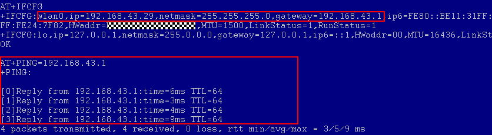